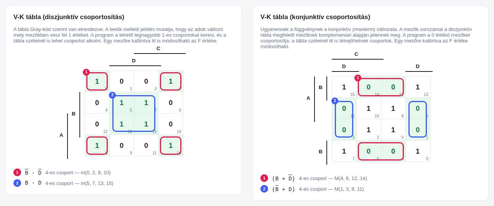
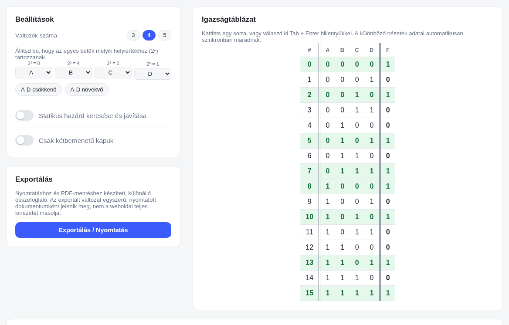
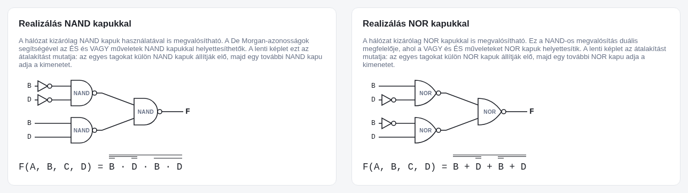
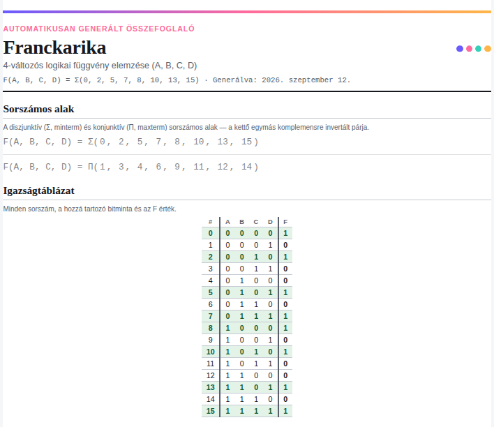

Franckarika
Adj meg egy 3–5 változós logikai függvényt, és a program automatikusan elkészíti a hozzá tartozó alakokat: igazságtáblázatot, sorszámos és minimál alakokat, diszjunktív és konjunktív V-K táblát, valamint NAND-, NOR- és NÉV kapus megvalósításokat. A statikus hazárdok felismerése és javítása is elérhető. A különböző nézetek egymással szinkronban frissülnek, az elkészült eredmény pedig PDF-ként is kinyomtatható vagy elmenthető.




V-K táblák — diszjunktív és konjunktív csoportosítás egymás mellett, színes jelöléssel
Mit tud?
Igazságtáblázat
Az igazságtáblázat soraira vagy a Σ()/Π() sorszámokra kattintva egyszerűen módosítható a függvény. A változások azonnal megjelennek a többi nézetben is.
Duális V-K tábla
A diszjunktív és konjunktív V-K tábla egymás mellett jelenik meg. Az egyik oldalon az 1-es, a másikon a 0-s mezők csoportosíthatók. A konjunktív tábla sorszámai a diszjunktív tábla megfelelő mezőinek komplemensei alapján készülnek.
Minimál alakok
A program automatikusan kiválasztja az esszenciális csoportokat és a még szükséges csoportokat, így előállítja a diszjunktív és konjunktív minimál alakot.
Kapu-realizációk
A minimál alakokból automatikusan elkészülnek a közvetlen NEM–ÉS–VAGY, NAND-NAND és NOR-NOR kapus hálózatok. Beállítható az is, hogy a rajzokon csak kétbemenetű kapuk szerepeljenek.
Hazárd-elemzés
A program megkeresi a statikus hazárdokat, és szükség esetén megmutatja a javításhoz szükséges csoportokat is.
Szabad helyiérték
A változókhoz szabadon hozzárendelhetők a helyiértékek. A hozzárendelések egymással felcserélhetők.
PDF export
Az elkészült függvény és a hozzá tartozó táblázatok, rajzok egy külön, nyomtatásra optimalizált PDF-összefoglalóba exportálhatók.
Élő szinkron
Ha valamit módosítasz az egyik nézetben, a többi nézet automatikusan követi a változást.